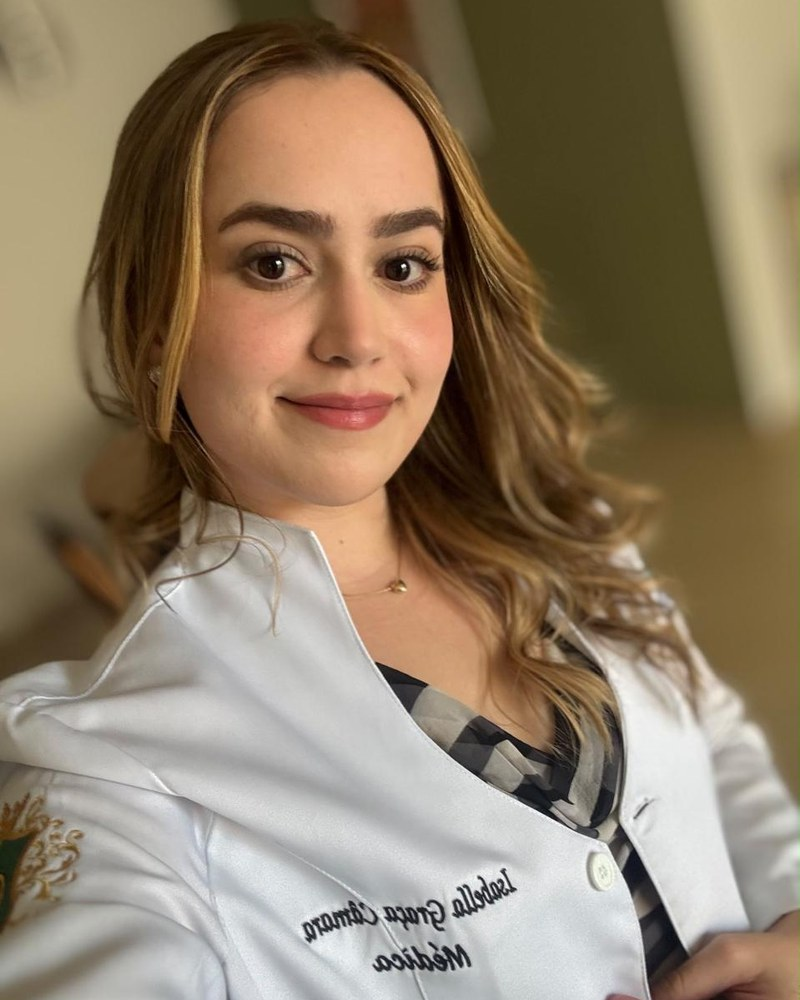

Ferro baixo, trombose, gestação, hemograma alterado: hematologista com residência na UFMG.
Dra. Isabella Graça Câmara atende às quartas, em Montes Claros, em consulta de uma hora. Plantonista do CTI da Santa Casa e ex-preceptora de residentes.
Residência em Hematologia e Hemoterapia na UFMG (2024 a 2026) e em Clínica Médica no HUCF Unimontes (2018 a 2020).
Médica · CRM-MG 73.571 · RQE 71.765, Hematologia · Clínica Gastrus, Montes Claros
Homens também são atendidos.

Quatro queixas, e o que a consulta faz com cada uma
É por estes motivos que se marca hematologista. Em cada um, a consulta termina em exame pedido ou decisão tomada.
Meu exame de ferro veio baixo
Ferritina é o estoque de ferro do corpo. Quando cai, a pergunta é por onde o ferro sai ou por que não entra. A Dra. Isabella pede os exames que respondem isso e define como repor.
Já tive trombose, ou há casos na família
Trombose é um coágulo dentro da veia. Depois dela, duas decisões: por quanto tempo usar anticoagulante e se vale investigar trombofilia, a tendência a formar coágulos. A consulta toma as duas.
Estou grávida, ou quero engravidar
Na gestação, o corpo pede mais ferro. Quem já teve trombose, ou tem casos na família, precisa decidir antes se usa anticoagulante. O pré-natal segue com o seu obstetra; a consulta responde a parte do sangue.
Meu hemograma veio alterado
Plaqueta baixa ou alta, glóbulos brancos fora da faixa, hemoglobina que não sobe. A Dra. Isabella compara com os exames anteriores e diz o que se repete, o que se investiga e o que só se acompanha.
Quando não esperar a consulta
Sangramento, falta de ar de repente, dor no peito, ou perna inchada e dolorida de um lado só: procure o pronto-atendimento ou ligue 192.

Por que uma hora
Exame de sangue se lê em série, com a história de quem fez ao lado. Numa consulta curta, isso não cabe.
Os exames anteriores
Traga os hemogramas e as ferritinas antigos. A tendência entre eles diz mais que o último resultado sozinho.
A história completa
Menstruação, gestações, cirurgias, remédios em uso, casos de trombose na família. É o que orienta o pedido de exame.
O próximo passo definido
Você sai com os exames pedidos ou com a conduta escrita, e sabe quando volta.
Formação e trajetória
Antes da hematologia, a Dra. Isabella fez clínica médica e plantão de UTI. Por isso a consulta lê o sangue junto com o resto do corpo.
-
Hematologia na UFMG · RQE 71.765
Residência em Hematologia e Hemoterapia na Universidade Federal de Minas Gerais, de março de 2024 a fevereiro de 2026.
-
Clínica Médica no HUCF · RQE 71.766
Residência em Clínica Médica no Hospital Universitário Clemente de Faria, da Unimontes, de março de 2018 a fevereiro de 2020. Graduação em Medicina pela Unimontes.
-
UTI e preceptoria
Plantonista do CTI Geral da Santa Casa de Montes Claros e, em 2020 e 2021, da UTI COVID do HUCF. Preceptora da residência de Clínica Médica na Santa Casa (2021 a 2024) e no HUCF (2022 a 2024).
Médica, CRM-MG 73.571. O CRM e os dois RQE se conferem no site do Conselho Regional de Medicina de Minas Gerais.
Perguntas e respostas
Quanto dura a consulta, e como é?
Uma hora, presencial. A Dra. Isabella revê a sua história e os exames que você trouxer, e sai dali o pedido de exame ou a conduta.
Preciso levar exames?
Leve todos os que tiver, inclusive os antigos, impressos ou no celular. A comparação entre eles pesa na decisão.
Quando e onde a Dra. Isabella atende?
Às quartas, das 13h às 17h, na Clínica Gastrus, em Montes Claros.
Ela atende homens?
Sim. A consulta de uma hora é a mesma para homens e mulheres.
Quanto custa e como marco?
A consulta é particular. O valor e os horários livres a recepção responde na conversa pelo WhatsApp, e é por lá que você marca.
Dá para tirar a dúvida do meu exame pelo WhatsApp?
Não. Exame não se interpreta por mensagem, só na consulta, com a sua história ao lado. O WhatsApp é para marcar.
Onde é a consulta
A consulta é presencial e pontual: chegue uns minutinhos antes.
Clínica Gastrus
- R. Eng. João Antônio Pimenta, 163, Cidade Santa Maria, Montes Claros, MG
- Quartas, das 13h às 17h
Exame alterado parado na gaveta não responde nada
Mande uma mensagem: a recepção da Clínica Gastrus responde pelo WhatsApp com os horários de quarta à tarde.